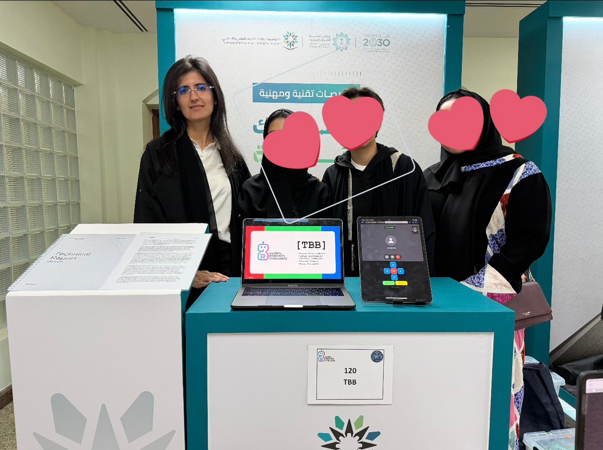
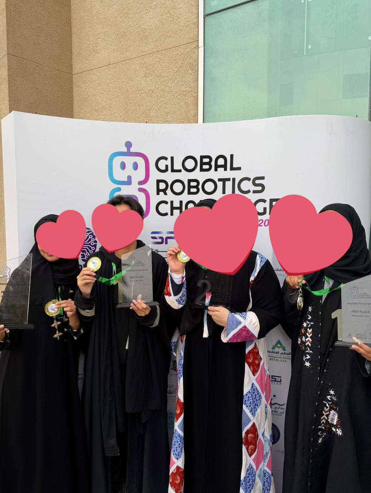
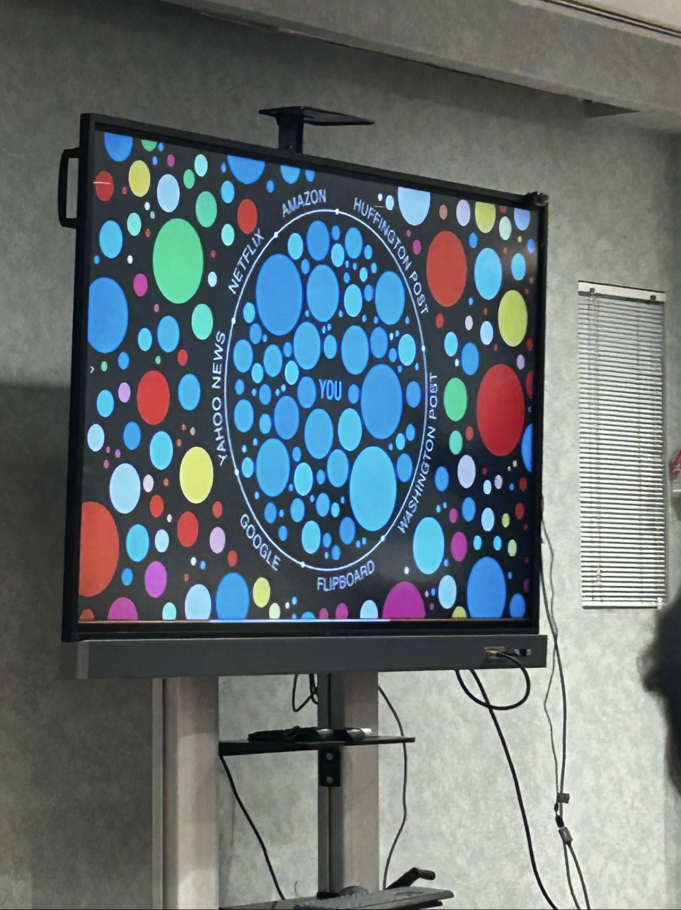
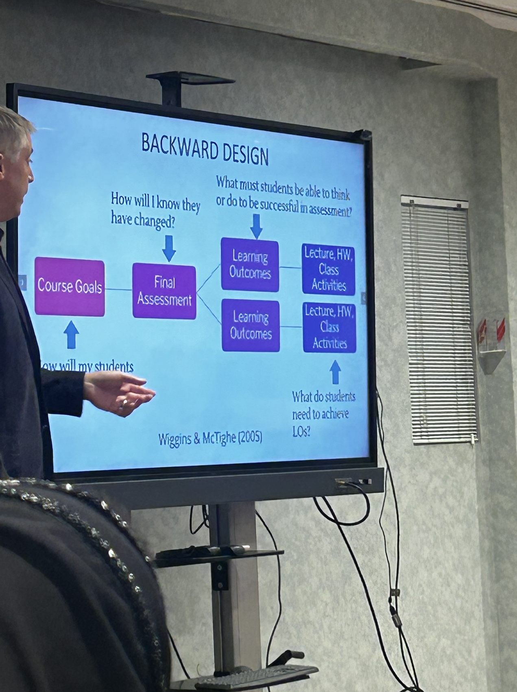
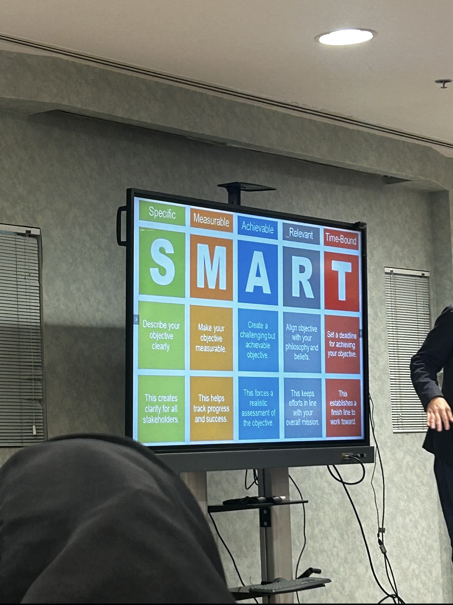
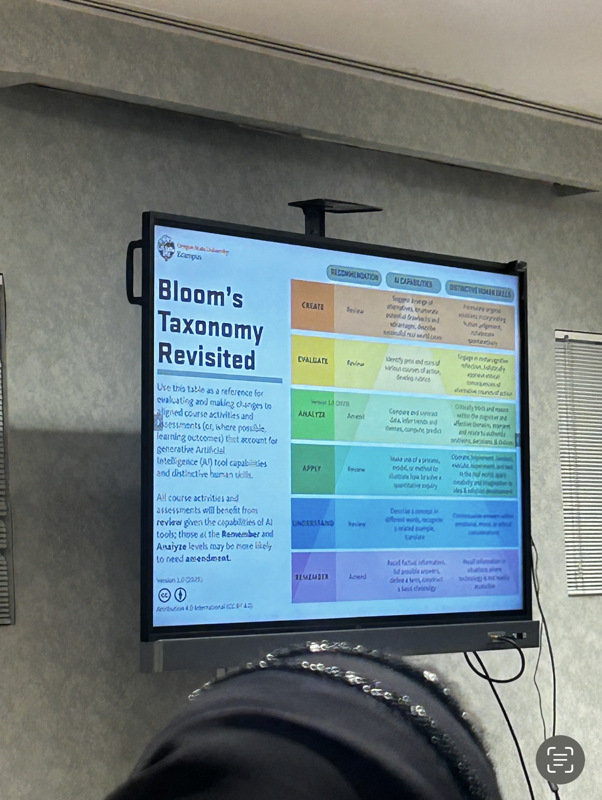

A Proud Moment: Supervising My Students at the Global Robotics Challenge 🎉
January 2, 2026 by Ghadah Alghamdi
robotics
grc
students
python
riyadh
From December 7 to December 10, I had the amazing opportunity to supervise my Computer Science junior students during their participation in the Global Robotics Challenge (GRC) in Riyadh. It was an unforgettable experience that combined learning, teamwork, excitement, and a lot of proud moments.
We spent 4 days and 3 nights in Riyadh, and the competition was hosted at
the Riyadh College of Technology – Males campus. From the moment we arrived,
the atmosphere was energetic and inspiring, with students from different places all sharing the same passion for technology and innovation.
The Challenges
My students participated in several exciting challenges, including:
- GRC Expo of Projects (Adult category)
- Python Challenge
- Ramp Rush Challenge
- Tug of War Challenge
Each challenge tested different skills—from problem-solving and programming to creativity, speed, and teamwork.
My Role as a Supervisor
I mainly supported the students who presented their project in the GRC Expo.
Their project, called ChromaBot, was especially meaningful.
ChromaBot is a low-cost, low-latency telepresence solution designed for chronically ill children who cannot physically attend school.
Many existing telepresence devices are very expensive and suffer from high latency, which makes real-time interaction difficult and frustrating.
ChromaBot directly addresses these issues by providing an affordable solution with much faster response time, helping children feel more connected to their classrooms, teachers, and classmates.
Seeing the students confidently explain their idea and its real-world impact was truly rewarding.
Outstanding Results
All the hard work paid off! The students achieved amazing results:
- First Place – GRC Expo
- First Place – Python Challenge
- First Place – Ramp Rush Challenge
- Second Place – Tug of War Challenge
Final Thoughts
This experience reminded me why supervising and mentoring students is so fulfilling.
Watching them grow, overcome challenges, and succeed on a national stage was incredibly inspiring.
I am extremely proud of my students and grateful to have been part of their journey at the Global Robotics Challenge.


Integrating AI into Effective Instructional Design Practices Workshop
January 17, 2026 by Ghadah Alghamdi
Instructional Design
AI
Education
Educational Technology
Curriculum Design
I had the opportunity to attend a valuable professional development workshop titled “Integrating AI into Effective Instructional Design Practices”, which was held at Dar Al-Hekma University on 18 August 2025,
marking the beginning of the Fall 2025–2026 academic year.
We spent 4 days and 3 nights in Riyadh, and the competition was hosted at
the Riyadh College of Technology – Males campus. From the moment we arrived,
the atmosphere was energetic and inspiring, with students from different places all sharing the same passion for technology and innovation.
The workshop focused on how artificial intelligence and educational technologies can be meaningfully integrated
into instructional design—not as standalone tools,
but as part of a well-aligned,
outcome-driven learning experience.
Understanding the Learner in a Digital Ecosystem
One of the opening discussions highlighted how learners today
exist within a complex digital information ecosystem.
Students are constantly influenced by platforms such as search engines, media outlets, streaming services, and content aggregators.
This reality reinforces the need for educators to:
- Be aware of how algorithms shape information exposure
- Design learning experiences that promote critical thinking and intentional engagement
- Use AI tools thoughtfully to guide, not overwhelm, learners
The workshop also introduced data and network visualizations as a way to
represent learning relationships, content connections, and engagement
patterns—demonstrating how analytics can support better instructional decisions.

Designing with the End in Mind: Backward Design
A core framework discussed was Backward Design, which emphasizes starting from the end:
- Define course goals
- Identify final assessments
- Specify learning outcomes
- Design lectures, activities, and assignments
This approach ensures that AI tools, assessments, and learning activities are all aligned
with what students are expected to achieve, rather than added as isolated enhancements.

Writing Strong Learning Objectives with SMART Criteria
The workshop reinforced the importance of clearly written objectives using the SMART framework:
- Specific
- Measurable
- Achievable
- Relevant
- Time-bound
Well-defined objectives serve as the foundation for:
- Meaningful assessment
- Effective feedback
- Appropriate integration of AI-supported activities

Aligning Cognitive Levels Using Bloom’s Taxonomy
The session revisited Bloom’s Taxonomy, moving from lower-order to higher-order thinking:
- Remember
- Understand
- Apply
- Analyze
- Evaluate
- Create
The discussion emphasized how AI tools can support different cognitive levels—for example:
- Assisting with recall and understanding
- Enabling analysis and evaluation
- Supporting creative tasks when used ethically and intentionally

Evaluating Technology Use with the SAMR Model
Another key takeaway was the SAMR Model, which helps educators reflect on how technology is used in learning:
- Substitution - direct replacement
- Augmentation – functional improvement
- Modification – significant task redesign
- Redefinition – creation of new learning tasks previously not possible
The workshop stressed the importance of moving beyond substitution toward
transformational use of technology, where AI enables deeper learning experiences rather
than simply digitizing traditional practices.
Key Takeaways
Overall, the workshop provided a clear message:
Effective integration of AI in education is not about tools alone—it is about design, alignment, and purpose.
By combining
- Backward Design
- SMART learning objectives
- Bloom’s cognitive framework
- SAMR technology integration
- Awareness of the digital information landscape
educators can create intentional, ethical, and impactful learning experiences that truly enhance student learning.
This workshop was a timely and valuable start to the Fall 2025–2026 semester,
offering practical frameworks and reflective insights that can be directly applied to course and curriculum design.